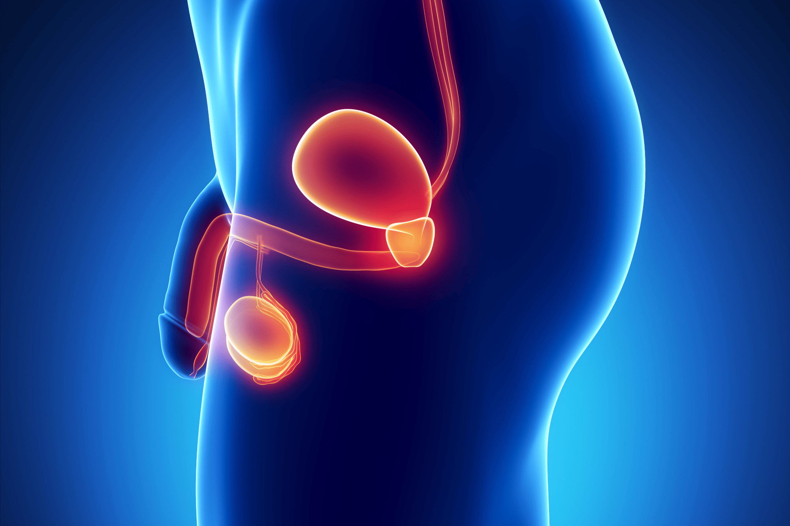

La próstata es una glándula en el hombre que queda justo debajo de la vejiga y delante del recto. Su tamaño es como el de una nuez y rodea una parte de la uretra (el tubo que conduce la orina al exterior desde la vejiga). La glándula prostática elabora un líquido que es parte del semen.

El cáncer de próstata
El cáncer de próstata se origina cuando las células normales de la próstata empiezan a cambiar y proliferar sin control, y forman un tumor maligno.
Tratamientos
Hay muchos tratamientos para el cáncer de próstata, incluyendo seguimiento, la terapia hormonal, quimioterapia, radiación y cirugía. Su médico analizará cada opción de tratamiento con usted para determinar cual es el mejor manejo para su caso.
Radioterapia
La radioterapia es un tratamiento que utiliza rayos X con alta energía para matar las células cancerosas o impedir que crezcan.
El médico que se especializa en radioterapia para tratar el cáncer, se conoce como oncólogo radioterápico.
La radioterapia se aplica desde una máquina que se llama acelerador lineal, el cual envía la radiación (los rayos X) al sitio donde se encuentra su cáncer o donde se encontraba (en los casos de pacientes a los que se les extrajo la próstata). Al tratarse de la zona de la próstata, el sitio que recibirá la radiación será la pelvis y no así otro sitio del cuerpo.
Tratamiento
El tratamiento va a consistir en varias sesiones (que varían de 20 a 39 sesiones según el criterio de su médico). Cada sesión dura entre 10 a 15 minutos, se recibe una sesión diariamente y por lo general de lunes a viernes en un horario específico para cada usuario.
Información importante
Es importante aclarar que la radioterapia no se contagia, por lo que no tiene que aislarse de los demás.
Si usted toma otros medicamentos, éstos deben continuarse normalmente.
Además usted puede continuar con su rutina diaria habitual.
Pasos a seguir durante el proceso de radioterapia
1. Valoración de primera vez con el médico especialista
Primero será valorado por el médico el cual le explicará sobre el tratamiento indicado. En caso de indicarse radioterapia, usted firmará consentimiento para recibir tratamiento.
Se entregará un folleto de "Recomendaciones dietéticas" para ser seguidas estrictamente durante tratamiento con la radioterapia. Con esta dieta lo que se quiere conseguir es que usted tenga un adecuado tránsito intestinal y hábito defecatorio ya que es un requerimiento importante para la radioterapia.
De ser necesario, el médico le recetará medicamentos para aliviar estreñimiento o mejorar la defecación y/o distensión abdominal.
2. Tomografía de simulación (TAC de simulación)
Se le realizará un TAC en el edificio de radioterapia, el cual no es un TAC diagnóstico. Se trata de un TAC de simulación que tiene como propósito obtener un mapa de su pelvis, para realizar el plan de su tratamiento, en otras palabras; para poder estimar como se va a distribuir la radiación en la región del tratamiento.
En el TAC se le acostará en una camilla similar a como recibirá el tratamiento y se toman las imágenes, posteriormente se le colocarán unas marcas en su piel.
Preparación para el TAC de simulación
Preparación de recto
Realizar con al menos 3 días de anterioridad las recomendaciones dietéticas del panfleto "Recomendaciones Nutricionales durante radiación Pélvica Abdominal".
Si usted padece de estreñimiento, el médico indicará alguna medicación ya sea oral o vía rectal para que usted pueda defecar diariamente y antes del TAC.
Preparación de vejiga
Tomar líquidos diariamente (1,5-2 litros de líquidos diario), para mantener una adecuada hidratación.
Una vez que usted se reporte en la unidad de TAC, se enviará a orinar, posteriormente se le solicitará que en un lapso de 10 minutos ingiera 350 ml de agua. Trascurridos 45 minutos, se le llamará y se hará el TAC.
Información adicional
Favor tener en cuenta que usted debe llevar su botella con agua.
Además, si siente que no puede retener las ganas de orinar o que está presentando fuga de orina, avise al técnico del TAC.